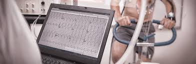

The importance and strong influence of computer science as an interdisciplinary parnter for sport and sport science is mainly proven by the research activities in computer science in sport. The following IT concepts are therby of particular interest:
- Data acquistion and data processing 
- Databases and expert systems
- Modelling (mathematical, IT based, biomechanical, physiological)
- Simulation (interactive, animation etc.)
- Presentation
Hawk-Eye uses six or more computer-linked television cameras situated around the court.
The computer reads in the video in real time,  and tracks the path of the tennis
ball on each camera. These six separate views are then combined together to produce
an accurate 3D representation of the path of the ball.
and tracks the path of the tennis
ball on each camera. These six separate views are then combined together to produce
an accurate 3D representation of the path of the ball.